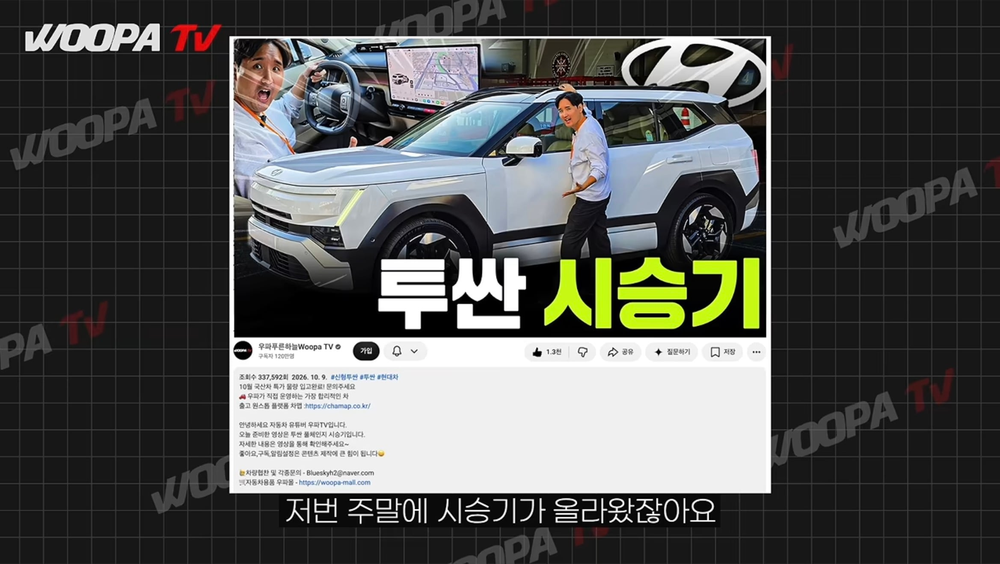
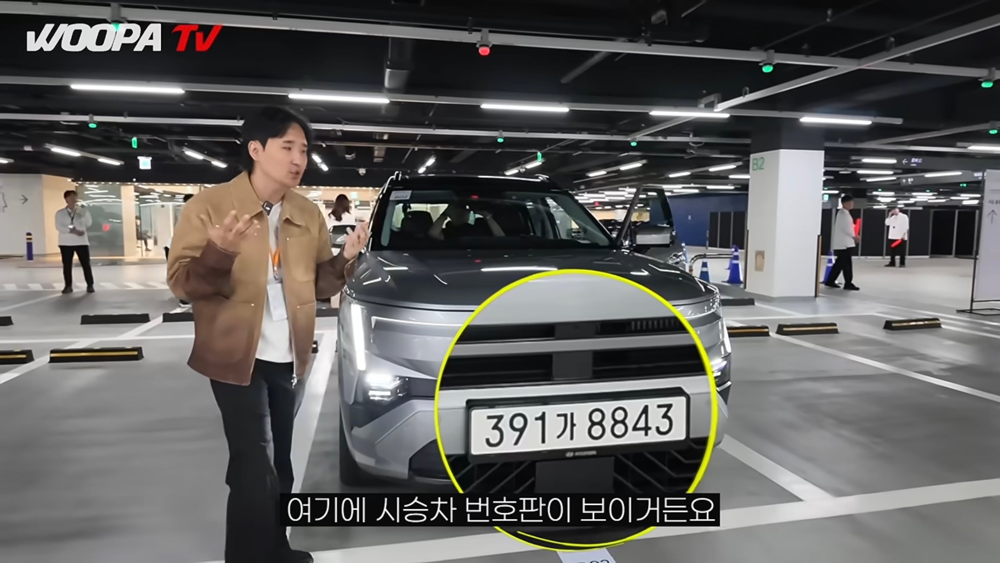
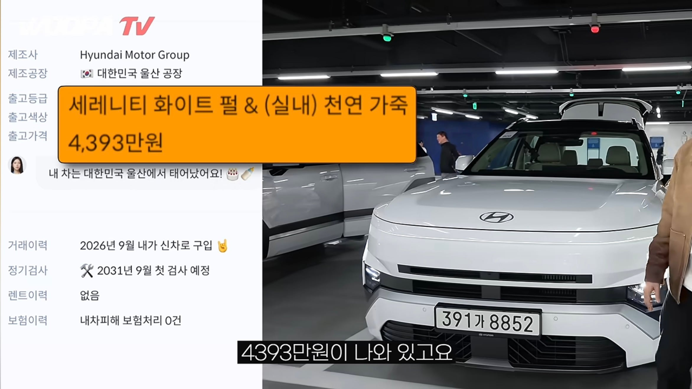
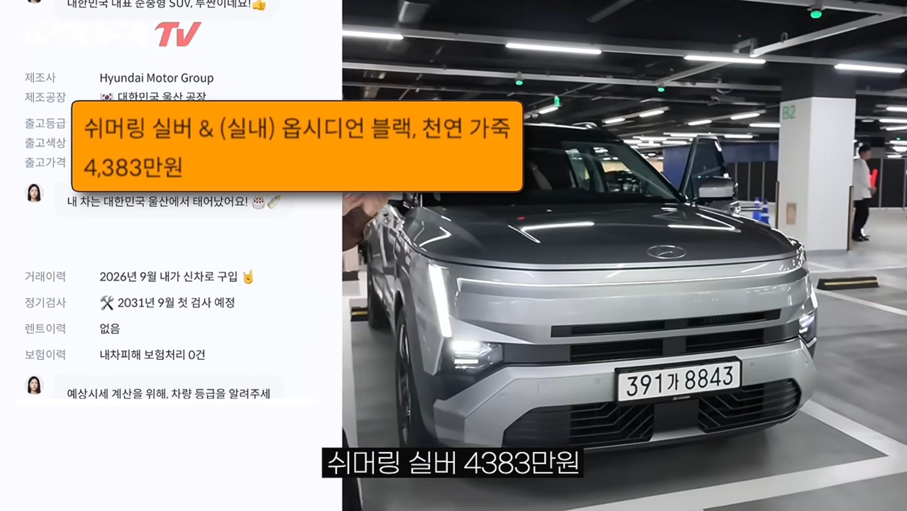
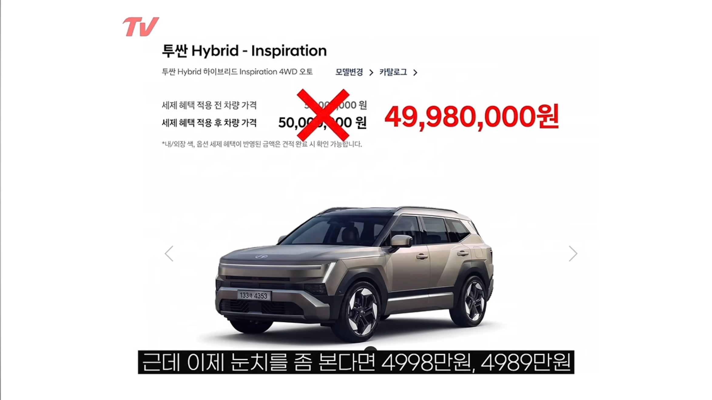

디
ㄷ



요약
신형투싼 헤이딜러로 사람들이 시승차 가격 조회함
가솔린 풀옵 기존보다 616만원 이상 4,393만원
하이브리드 풀옵은 4990~4980만원 추정
현재는 시승차 번호 조회 막힘(현대측에서 막은듯)
이젠 진짜 돈없어서 모델y같은 수입차 사야함


디
ㄷ



요약
신형투싼 헤이딜러로 사람들이 시승차 가격 조회함
가솔린 풀옵 기존보다 616만원 이상 4,393만원
하이브리드 풀옵은 4990~4980만원 추정
현재는 시승차 번호 조회 막힘(현대측에서 막은듯)
이젠 진짜 돈없어서 모델y같은 수입차 사야함
나 니로 9년째 타는데 뭐 문제있나
니로는 괜찮아...
k7프리미어 하브 6년째 타는데 무슨 문제가 있길래 그럼? 시비가 아니라 주의하려고 함
쏘렌토, 싼타페 값이네 ㅁㅊㅋㅋㅋ
그냥 신차는 무조건 일괄적으로 600올리나보네 받아들여라 걍
ㅈㄴ비싸다 진짜.....
내연기관탈 사람이 테슬라y는 안탈거 같은디
일단 기름 한방 주유하면 8~900키로 가는데
모델y는 겨울에 더 취약한 배터리라 히터틀면 주행거리가 300도 안되고 이백 언저리 빌빌데는데
그거 감안하면서까지 내연기관사려고 투싼 보는 사람이 테슬라 안볼거 같음
저도 그렇게 생각하고 싼하 쏘하 알아보다가 결국엔 비싸서 모y 갔습니다...아직 부산 급 장거리는 안가보고 강릉만 갔다 와봤는데 괜찮았네요 근데 추워지는게 걱정이긴 한데..윈터타이어도 좀 귀찮고ㅠㅠ
아반떼랑 투싼같은 준중형을 사는 사람들이 바라는건 더 저렴한 차지 더 큰 차가 아님
그 관점에서 모델y가 더 매력적임 주행거리나 출력은 차후 문제인데 주행거리는 짧아도 출력이나 주행안정성은 모델y가 압도적임
나도 전기차 사고싶었는데 처가가 부산이라... 내려가서까지 충전 신경쓰기 힘들거같아서 걍 내연차 삼
스포티지 풀옵 4천에 뽑음..
세금포함하면 4200쯤 쓴듯?
근데 이거도 4개월 기다리고 뽑은거
이사람 왜이렇게 살이 빠졌대요? 제 기억에는 통통했던 것 같은데?
요즘 급격하게 빠진다 = 그 자로
진짜 국산차 비싸서 수입차 사겠네
저돈이면 모y사지..
투싼이 5천!!
요즘 차 살려고 쫌 보다보니깐 이게 보통 10년 전후로 차를 사다보니깐 갑자기 확 오른것 같은 느낌이 더 많이 드는 듯. 와 내가 10년전에 저 차를 얼마주고 샀는데.. 이런 생각인데 지금보니 천만원이 넘게 올랐네.. ㅋ
난 테슬라 살돈도 없으니까 byd탈께
ㅋㅋㅋㅋ 진짜 정신나갔네 ㅋㅋ
그냥 3천이하 중고차 타다가 5년 뒤에 전기차로 사야겠다
국산 1.6T를 4400주고 사라고?
쏘렌토 싼타페 두고 저걸 산다고? ㅋㅋㅋㅋㅋㅋㅋㅋㅋㅋ
투싼이 무슨 오천이야 ㅗ
2~3년 타고 던지는 사람말고 차 오래 타는 사람들은 왠만하면 하브는 사지마라